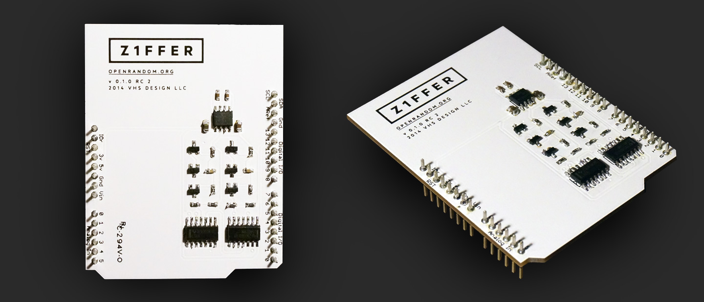

WHAT IS IT?
Z1FFER is an open source hardware random number generator.
WHAT IS IT FOR?
Cryptography depends on high-quality random numbers that originate from a truly random source. When you go to your bank's website, for example, your computer must automatically generate a random "password" (known as a key) in order to create an encrypted connection with the bank (this is an oversimplification; this website has more detailed information). Your computer could generate this key using an algorithm alone, but the problem with this approach is that if someone knows the algorithm, they can theoretically predict the key and crack the encryption between you and your bank. Therefore many computers have a hardware random number generator that uses a natural source of entropy to generate irreproducible randomness.
However, the Snowden documents revealed that the NSA actively works to insert vulnerabilities into commercial encryption systems, and one way of undermining encryption systems is to tamper with their random number generation. In 2005 the NSA published a random number generating algorithm with the recommendation that people use it in their systems. Later, security researchers revealed the NSA method allowed for the existence of a secret key, which, if known, would allow them to predict the output of the algorithm, which would in turn allow the NSA to break any encryption using their recommended algorithm.
Additionally, there is a long list of catastrophic security breaches that were due to malfunctioning (or inadequate, or compromised) random number generators [link, link, link, link].
HOW CAN Z1FFER HELP?
Z1FFER is designed to deliver random data of the highest quality, have high throughput, and work with Arduino. It is an easily accessible platform for experimenting with entropy for security research and scientific purposes. It is not designed to be self-monitoring or secure against side-channel attacks—things that governments require for certification in military and government use. It is, however, intended to be the first step towards a system that is hardened and up to these standards. It’s also cheap.
WHY OPEN SOURCE?
The problem with closed-source random number generators is that they are hard to trust–we don’t know what they are doing. Z1FFER will be open to the scrutiny of the public. Weaknesses in my approach will hopefully be pointed out and the device made better. The goal is to create a random number generator whose output is impossible to predict and highly trusted.
WHY SHOULD I GET ONE?
Because you are cursed with the inclination to be interested in this kind of thing.
WHY SHOULD I NOT GET ONE?
Z1FFER is intended for developers and hobbyists. It is not particularly user-friendly; it essentially pours a stream of randomness into your computer via USB. It does not come with any software to help integrate this randomness stream with the security systems in your computer/server farm/communications satellite (though I will put up a few scripts to get you started). If you intend to use this device for security purposes, only do so if you are aware of the risks involved.
HOW DOES IT WORK?
Z1FFER uses thermal noise from a resistor that is put through something known as a Modular Entropy Multiplier architecture. This was invented by Peter Allan in 1999, and later reinvented by Bill Cox – the circuit is very close to Bill Cox's design. It involves taking the small noise signal and doubling it repeatedly, causing it to grow exponentially. Once it crosses a threshold the voltage range is added and the result modulated – this has a subtractive effect that is repeated until the voltage falls below the threshold. The signal moves back and forth above and below the threshold in a random manner, which is converted into a random bitstream. For a more detailed explanation, see the how it works page. There are also instructions to build your own.
Z1FFER's ≤0.2.x used avalanche noise and a reversed biased P-N junction. How it works and how to build your own are still available on the resources page.